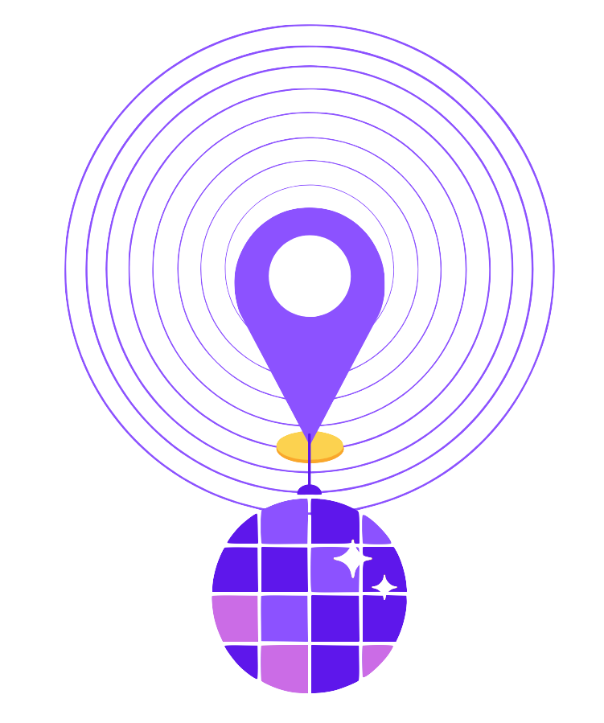
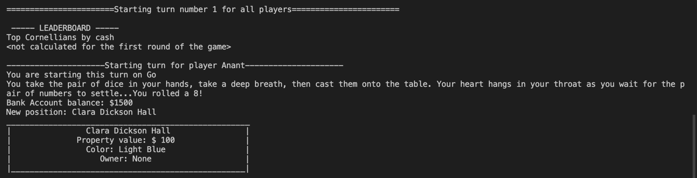

Projects

As part of a Cornell University Hack Challenge,
I worked with a group of friends to develop an app called Find My Party .
This is an app which registers local parties nearby and allows users to search for and add their own parties through a
map-view and various table-views. My team and I won second place overall out of approximately 30 teams in the
Cornell University Fall 2021 AppDev Hack Challenge.

I led a team of four software engineers to develop a command-line based version of the
classic board game Monopoly called Cornellopoly using OCaml. This project is an online version of the famous game, Monopoly, themed around
Cornell locations, landmarks, and inside jokes. The interface shows the user the entire board, their location on the board, and relevant features of the
board (prices, property ownership). The user will choose possible actions such as rolling dice, selling properties, and paying tax. The user will
be able to move their piece around the board, view property details, and view community chest and chance style cards.